이 사이트는 아래 6개의 화면으로 구성되어 있습니다. 화면 사이의 이동은 버튼 클릭 또는 표 안의 글자(제품명, 해외제조업소, 제조국, 제조사명) 클릭으로 이루어집니다. 뒤로 갈 때는 각 화면 위쪽의 "← 돌아가기" 글자를 클릭합니다.
| 화면 이름 | 이동 방법 | 확인할 수 있는 정보 |
|---|---|---|
| ① 메인 대시보드 | 사이트에 접속하면 가장 먼저 나오는 화면 | 전체 수입 / OEM 이력 목록 (제품 단위) |
| ② 공장별 보기 | 메인 대시보드 위쪽의 "🏭 공장별로 보기" 버튼 클릭 | 같은 이력을 해외제조업소(공장) 단위로 묶어서 확인 |
| ③ 국가별 보기 | 메인 대시보드 또는 공장별 보기 위쪽의 "🌍 국가별로 보기" 버튼 클릭, 또는 표의 제조국 글자 클릭 | 국가별 요약, 주요 수입 품목, 해당 국가 제조사 목록 |
| ④ 제품 상세 (제조사 후보 화면) | 메인 대시보드나 공장별 보기 표에서 제품명 글자 클릭 | 해당 제품을 취급하는 해외 제조업체 후보 목록 |
| ⑤ 제조사 상세 화면 | 표의 해외제조업소 글자 클릭, 또는 제조사 후보/제조사 목록에서 제조사명 클릭 | 연락처, 상품 정보, OEM/소싱 정보, 국내수입 추이, 취급 제품 목록 |
| ⑥ 수입횟수 추이 창 | 표의 "📈 추이 보기" 버튼 클릭 | 연도별 / 월별 수입횟수 |
사이트에 접속하면 가장 먼저 보이는 화면입니다. 전체 수입 / OEM 이력이 제품(SKU) 단위 표로 표시됩니다.
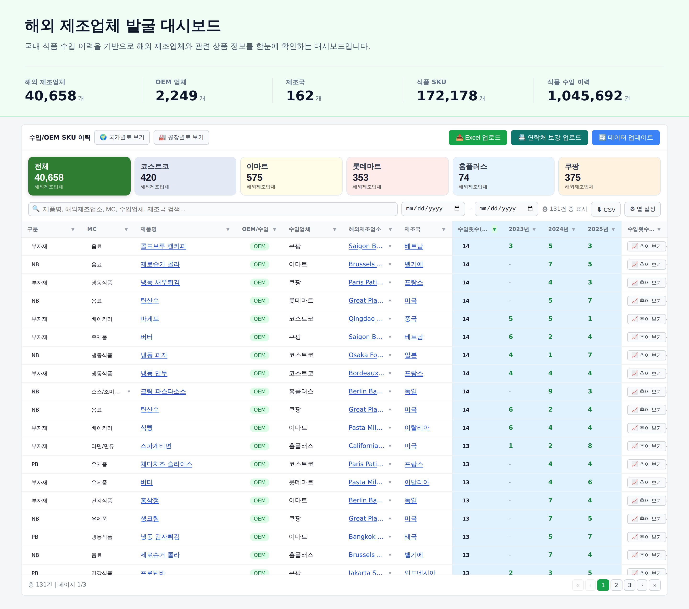
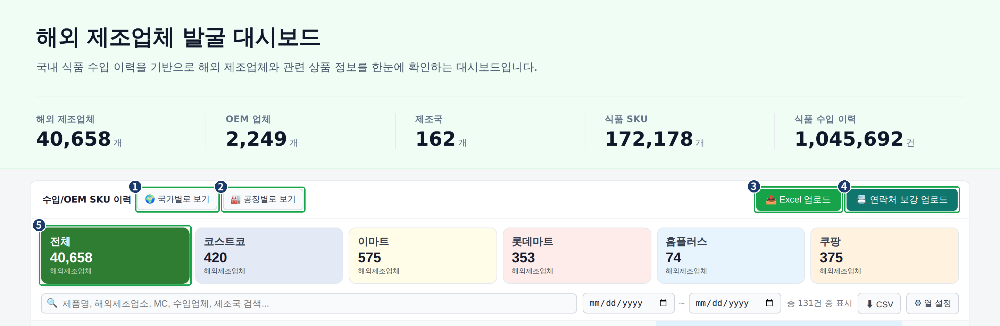
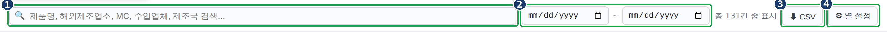
검색창 위쪽에는 "총 N건 중 표시" 문구가 표시되어, 현재 조건에 맞는 전체 건수를 확인할 수 있습니다.
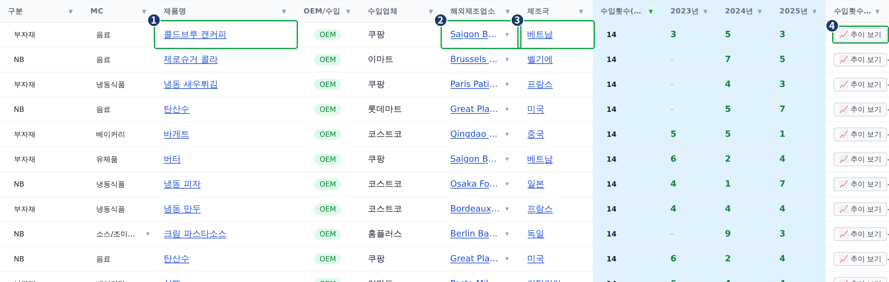
| # | 컬럼명 | 표시되는 값 |
|---|---|---|
| 1 | 구분 | PB, NB, 부자재 등 제품 구분값 |
| 2 | MC | 제품이 속한 상품 카테고리 |
| 3 | 제품명 | 제품 이름 (클릭 가능) |
| 4 | OEM/수입 | OEM 또는 수입 여부 배지 |
| 5 | 수입업체 | 제품을 수입한 업체명 |
| 6 | 해외제조업소 | 실제 제조 공장 이름 (클릭 가능) |
| 7 | 제조국 | 제조업소가 위치한 국가 (클릭 가능) |
| 8 | 수입횟수(전체) | 지금까지 전체 수입 건수 합계입니다. 검색창 위쪽의 날짜 필터를 지정하면, 그 기간 기준 수입 건수로 값이 바뀝니다. |
| 9 | 연도별 수입횟수 (3개 열) | 최근 3개 연도 각각의 수입 건수. 값이 없으면 "-"로 표시 |
| 10 | 수입횟수 추이 | "📈 추이 보기" 버튼 |
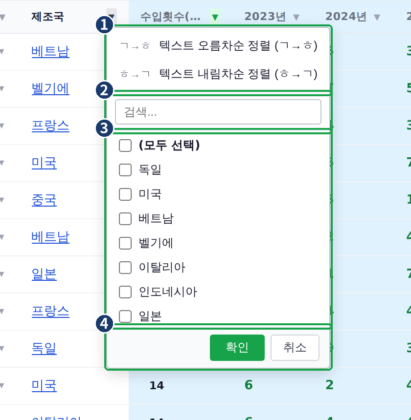
모든 열 머리글(구분, MC, 제품명, OEM/수입, 수입업체, 해외제조업소, 제조국 등)에서 같은 방식으로 정렬과 필터를 사용할 수 있습니다.
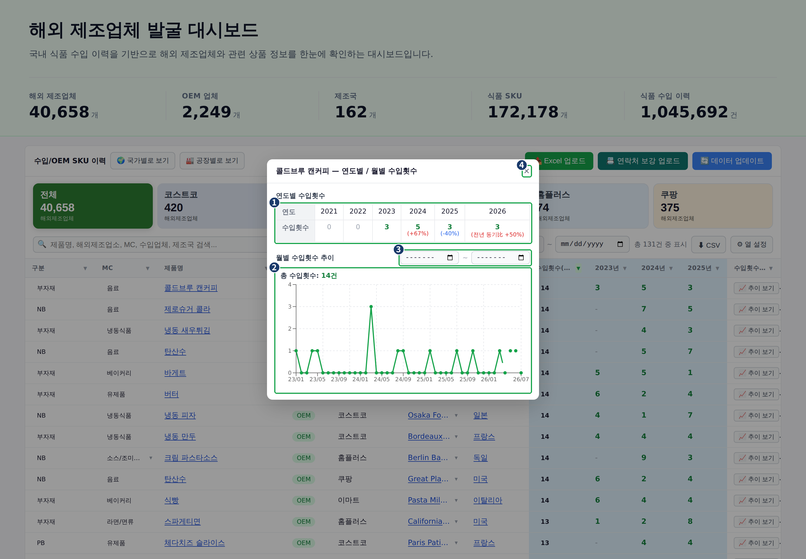
이 창은 메인 대시보드, 공장별 보기, 제조사 상세 화면의 취급 제품 목록에서 동일한 방식으로 열립니다. 자세한 내용은 20페이지 9번 항목을 참고합니다.
메인 대시보드와 같은 수입 이력을 제품(SKU) 단위로 확인하는 화면입니다. 다만 메인 대시보드처럼 수입업체별로 행을 나누지 않고, 같은 해외제조업소가 취급한 같은 제품이면 수입업체가 여러 곳이어도 하나의 행으로 합쳐서 보여줍니다.
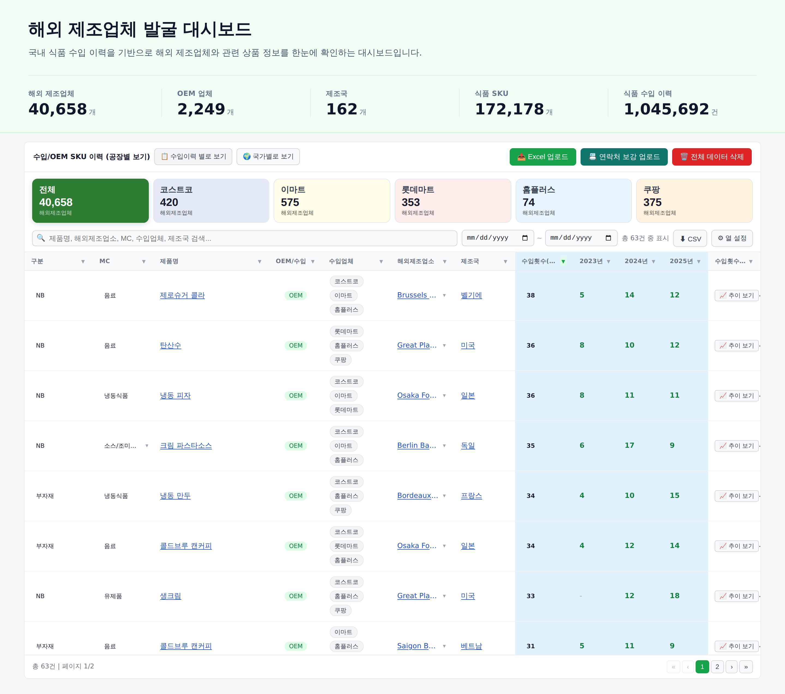
메인 대시보드 위쪽의 "🏭 공장별로 보기" 버튼을 클릭하면 이 화면으로 이동합니다.
표의 열 구성(구분, MC, 제품명, OEM/수입, 수입업체, 해외제조업소, 제조국, 수입횟수(전체), 연도별 수입횟수, 수입횟수 추이)은 메인 대시보드와 동일합니다. 검색창, 날짜 필터, CSV, 추이 보기 버튼도 메인 대시보드와 같은 방식으로 동작합니다. 자세한 사용법은 4페이지 4번 항목을 참고합니다.
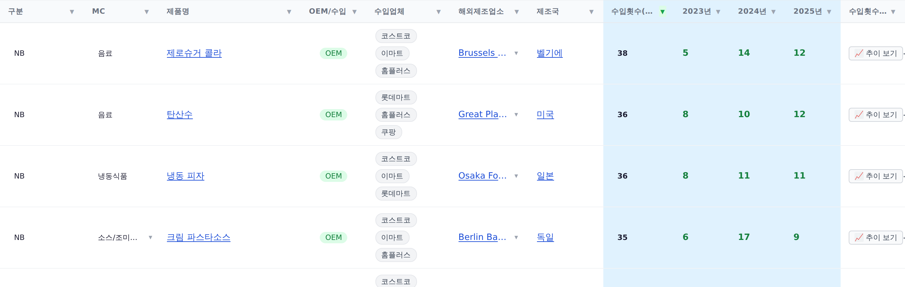
국가 단위로 제조사 현황과 수입 품목을 확인하는 화면입니다.
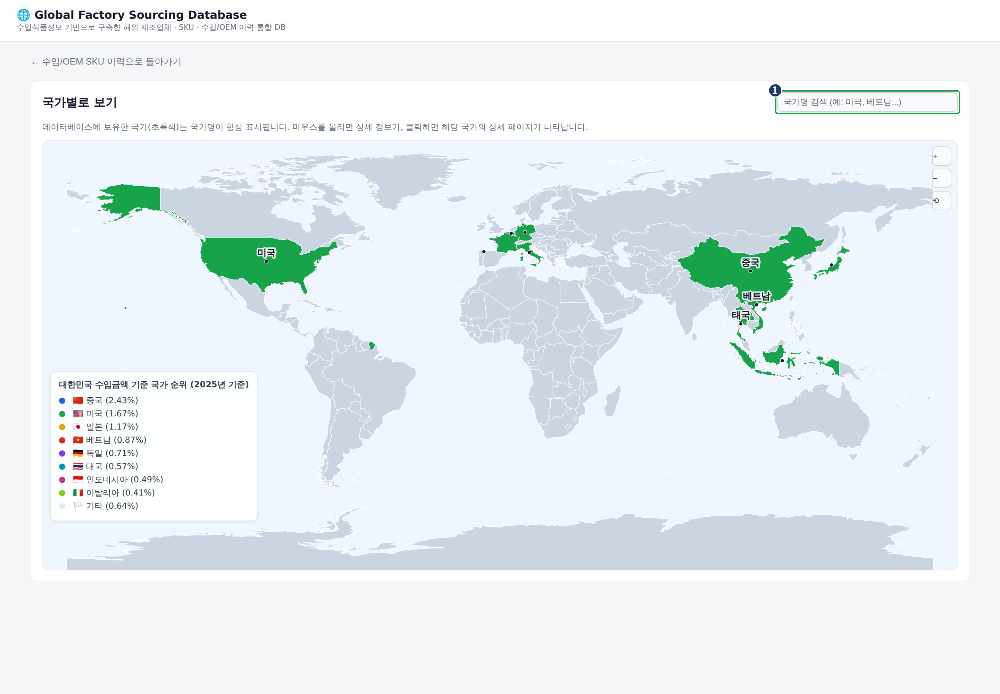
메인 대시보드 또는 공장별 보기 화면 위쪽의 "🌍 국가별로 보기" 버튼을 클릭하면 이 화면으로 이동합니다.
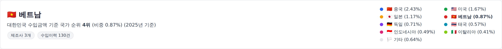
국가명과 국기, 대한민국 수입금액 기준 국가 순위와 비중, 등록된 제조사 수, 수입이력 건수가 표시됩니다. 오른쪽에는 상위 국가들의 수입금액 비중 목록이 함께 표시됩니다.
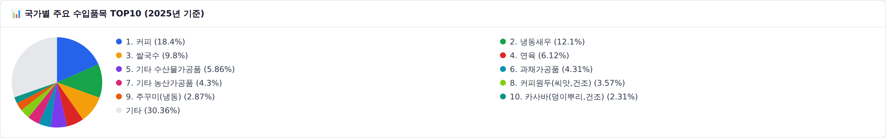
해당 국가에서 대한민국으로 수입되는 품목 상위 10개가 순위, 품목명, 비중(%)과 함께 원 그래프로 표시됩니다.
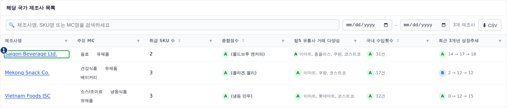
목록 위쪽의 검색창으로 제조사명 · SKU명 · MC명을 검색할 수 있고, 날짜 필터로 기간을 지정할 수 있습니다. "⬇ CSV" 버튼으로 목록을 내려받을 수 있습니다.
| # | 컬럼명 | 표시되는 값 |
|---|---|---|
| 1 | 제조사명 | 제조사 이름 (클릭 가능) |
| 2 | 주요 MC | 이 제조사가 취급한 상품 카테고리 목록 |
| 3 | 취급 SKU 수 | 이 제조사가 취급하는 제품 수 |
| 4 | 종합점수 | A / B / C 등급 배지와 대표 제품명 |
| 5 | 주요 유통사 거래 다양성 | A / B / C 등급 배지와 거래한 유통사 이름 |
| 6 | 국내 수입횟수 | A / B / C 등급 배지와 전체 수입 건수 |
| 7 | 최근 3개년 성장추세 | A / B / C 등급 배지와 연도별 수입 건수 흐름 (예: 5 → 11 → 9) |
메인 대시보드나 공장별 보기 표에서 제품명을 클릭하면 나오는 화면입니다. 해당 제품을 취급하는 해외 제조업체 후보들을 한 화면에서 비교할 수 있습니다.
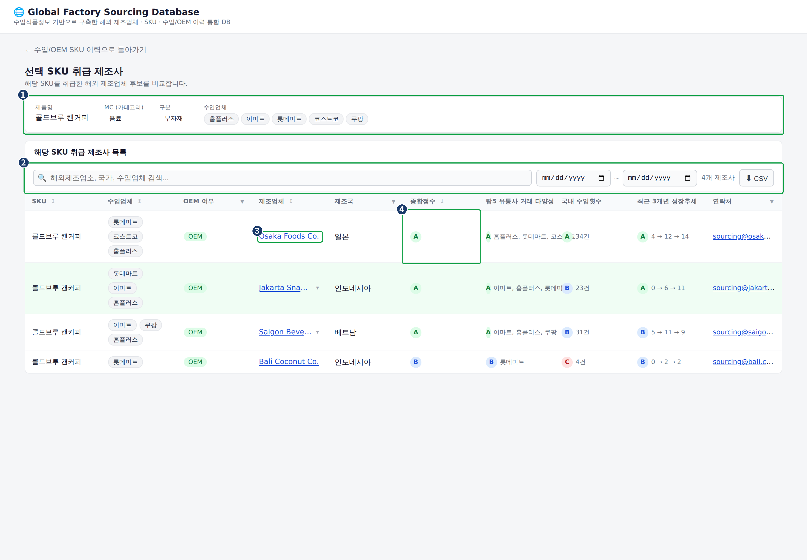
| # | 컬럼명 | 표시되는 값 |
|---|---|---|
| 1 | SKU | 기준이 되는 제품명 |
| 2 | 수입업체 | 이 제품을 거래한 유통사 배지 |
| 3 | OEM 여부 | OEM 또는 수입 배지 |
| 4 | 제조업체 | 제조사 이름 (클릭 가능) |
| 5 | 제조국 | 제조사가 위치한 국가 |
| 6 | 종합점수 | A / B / C 등급 배지 |
| 7 | 주요 유통사 거래 다양성 | A / B / C 등급 배지와 거래 유통사명 |
| 8 | 국내 수입횟수 | A / B / C 등급 배지와 수입 건수 |
| 9 | 최근 3개년 성장추세 | A / B / C 등급 배지와 연도별 흐름 |
| 10 | 연락처 | 이메일 또는 홈페이지 링크. 등록된 값이 없으면 "-"로 표시 |
표에서 해외제조업소 또는 제조사명을 클릭하면 나오는 화면입니다. 특정 제조사의 연락처, 상품 정보, 수입 이력을 한 화면에서 확인합니다.
제조국, 제조사명(해외제조업소명), 상태 배지가 표시됩니다. 상태 배지는 이메일 등록 여부에 따라 "연락 가능", OEM 이력 여부에 따라 "OEM 이력 있음", 한국 수출이력 여부에 따라 "한국 수출이력 있음", 담당 MD가 등록된 경우 "담당: OOO"로 표시됩니다.
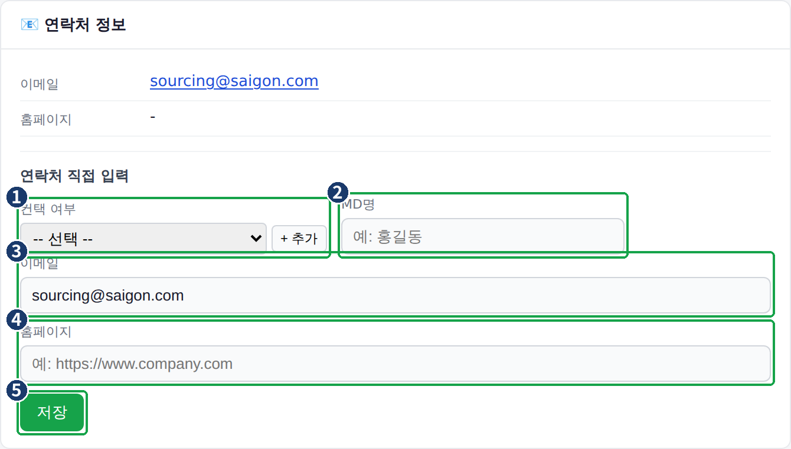
영역 위쪽에는 등록되어 있는 이메일과 홈페이지가 표시됩니다. 값이 없으면 "-"로 표시됩니다.
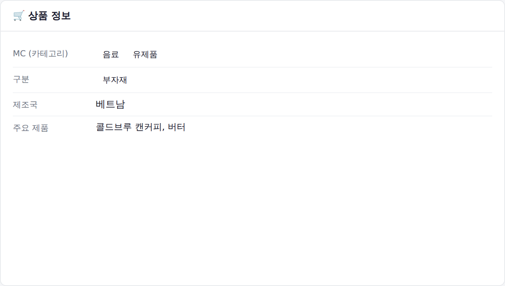
이 제조사가 취급하는 MC(카테고리), 구분, 제조국, 주요 제품(최대 5개, 그 이상은 "외 N건"으로 표시)이 나열됩니다.
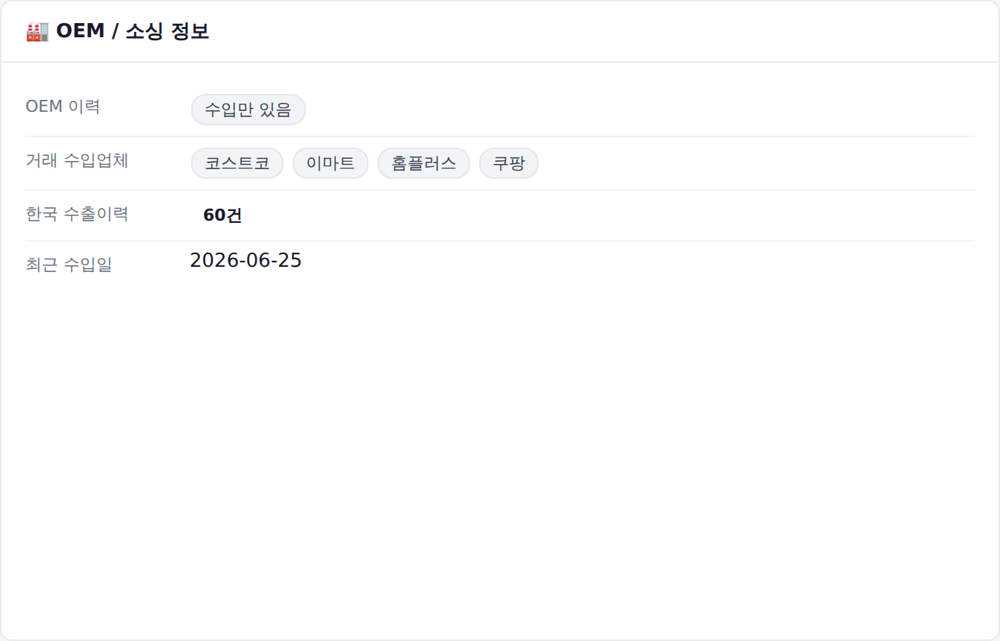
OEM 이력(OEM 이력 있음 / 수입만 있음), 거래 수입업체 목록, 한국 수출이력 건수, 최근 수입일이 표시됩니다.
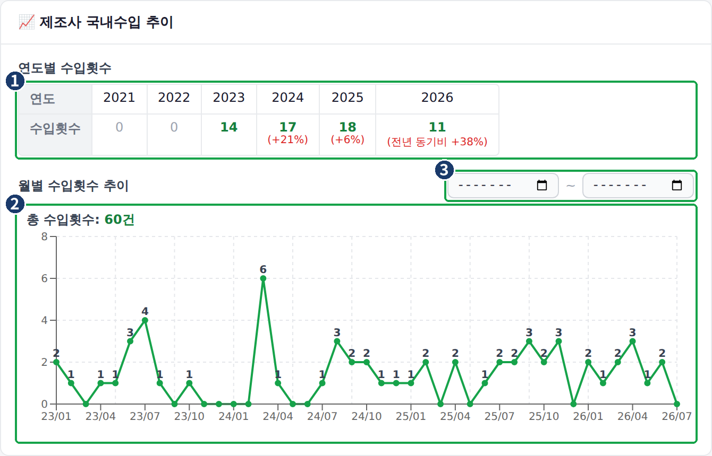
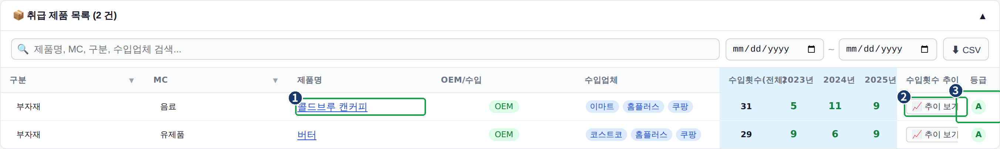
제목을 클릭하면 목록을 펼치거나 접을 수 있습니다. 검색창(제품명, MC, 구분, 수입업체)과 날짜 필터, "⬇ CSV" 버튼이 함께 제공됩니다. 표 열 구성(구분, MC, 제품명, OEM/수입, 수입업체, 수입횟수(전체), 연도별 수입횟수, 수입횟수 추이, 등급)은 메인 대시보드 표와 같은 방식으로 읽으면 됩니다.
표에 있는 "📈 추이 보기" 버튼을 클릭하면 나오는 창입니다. 메인 대시보드, 공장별 보기, 제조사 상세 화면의 취급 제품 목록에서 동일한 방식으로 열립니다.
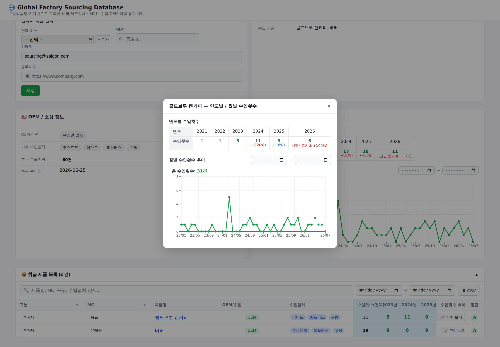
| 구성 요소 | 내용 |
|---|---|
| 연도별 수입횟수 표 | 2021년부터 올해까지 연도별 수입 건수와 전년 대비 증감률을 보여줍니다. 이력이 전혀 없으면 "이력 없음"으로 표시됩니다. |
| 월별 수입횟수 그래프 | 월 단위 수입 건수를 선 그래프로 보여줍니다. 위쪽에 해당 기간의 총 수입횟수가 표시됩니다. 해당 기간에 이력이 없으면 "해당 기간 이력 없음"으로 표시됩니다. |
| 기간 필터 | 시작 월과 종료 월을 선택하면 월별 그래프만 그 기간 기준으로 다시 그려집니다. 연도별 표는 이 필터의 영향을 받지 않습니다. 값이 입력되어 있으면 "초기화" 버튼으로 필터를 지울 수 있습니다. |
| 닫기 버튼 | 창 오른쪽 위의 "✕"를 클릭하면 창이 닫힙니다. 창 바깥의 어두운 영역을 클릭해도 닫힙니다. |
데이터를 올리는 버튼들은 메인 대시보드와 공장별 보기 화면 위쪽에 있습니다.
"📤 Excel 업로드" 버튼을 클릭하면 파일 선택 창이 열립니다. 기본 수입 / OEM 데이터가 담긴 .xlsx 파일을 선택하면 업로드가 진행됩니다. 업로드가 끝나면 화면 위쪽에 처리 결과 문구(적재 건수, 스킵 건수)가 표시되고, 표 내용이 새로 고쳐집니다. .xlsx 또는 .xls가 아닌 파일은 업로드되지 않습니다.
"📇 연락처 보강 업로드" 버튼을 클릭하면 파일 선택 창이 열립니다. 제조사의 이메일, 홈페이지, 인증서 등 연락처 정보가 담긴 .xlsx 파일을 선택하면, 기존에 등록된 수입 이력에 해당 연락처 정보가 채워집니다. 업로드가 끝나면 처리 결과 문구(처리한 행 수, 매칭된 행 수)가 표시됩니다.
어떤 정보를 보고 싶을 때 어느 화면으로 이동하면 되는지 정리한 표입니다.
| 보고 싶은 정보 | 이동 방법 |
|---|---|
| 제품 정보 | 메인 대시보드 검색창에 제품명을 입력합니다. |
| 제조사 상세 | 표에서 해외제조업소명을 클릭합니다. |
| 국가별 제조사 | "🌍 국가별로 보기" 버튼을 클릭하거나, 표에서 제조국을 클릭합니다. |
| 공장 단위 이력 | "🏭 공장별로 보기" 버튼을 클릭합니다. |
| 수입 추이(연도별 · 월별) | 표의 "📈 추이 보기" 버튼을 클릭하거나, 제조사 상세 화면의 "제조사 국내수입 추이" 영역을 확인합니다. |